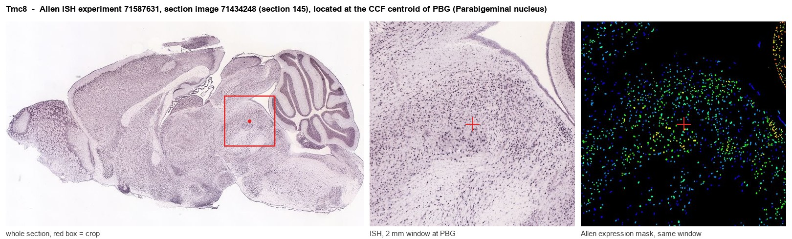
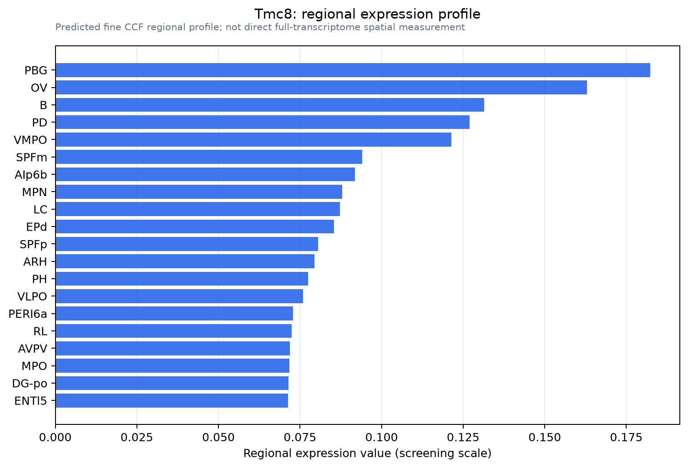

Tmc8
Transmembrane channel-like protein 8 (Epidermodysplasia verruciformis protein 2 homolog)
Spatial tier: RESTRICTED · Class: ION_CHANNEL · Top region: PBG (Parabigeminal nucleus) · Positive regions: 23/554
44.7Discovery Score
34.8Targetability Score
CEvidence grade C
What this means: Tmc8: fine CCF profile is restricted toward PBG (top regions: PBG, OV, B, PD, VMPO; 23 positive regions); direct spatial validation is still required.
Function in PBG: evidence, prediction, innovation
- Gene function
- Tmc8 (EVER2) encodes a multipass transmembrane protein of the transmembrane channel-like family that also contains the hair-cell mechanotransduction subunits TMC1 and TMC2. TMC8 is not a proven ion channel: it complexes with TMC6/EVER1 and the zinc transporter ZnT-1 in the endoplasmic reticulum and regulates intracellular zinc distribution and zinc-dependent transcription. Loss-of-function mutations cause epidermodysplasia verruciformis.
- Region function
- The parabigeminal nucleus is a cholinergic and glutamatergic isthmic midbrain nucleus reciprocally connected with superior colliculus and projecting to central amygdala, contributing to visual motion processing and looming-evoked defence.
- Published in this region
- inferred No region-specific literature found. The closest evidence is Kurima et al. 2003, who in defining the TMC family showed TMC4-TMC8 are expressed at appreciable levels across multiple tissues, unlike the low-expressing TMC1-TMC3 subfamily; no study reports TMC8 protein or function in any brain nucleus, its only established role being EVER1/EVER2-ZnT-1 zinc trafficking in keratinocytes and lymphocytes.
- Predicted function
- Prediction: rather than acting as a plasma-membrane channel, TMC8 in PBG neurons most plausibly works in the endoplasmic reticulum regulating zinc homeostasis and MTF-1-dependent transcription, tuning the metabolic and secretory capacity of tonically firing cholinergic neurons. Conditional deletion would then give subtle shifts in intrinsic excitability, zinc-dependent gene expression or vulnerability to inflammatory insult rather than an acute conduction phenotype. The pairing may partly reflect low-level or non-neuronal expression.
- Innovation
- ★★★★★ 5/5 TMC8 has never been studied in the nervous system at all, so any validated neuronal role in a defined defensive circuit would be new.
- Tools
- None known for brain work: no Tmc8-Cre line, no selective pharmacology, no validated neural antibody. Only Tmc8/EVER2 knockout and patient-mutation reagents from dermatology and immunology, plus generic ChAT-IRES-Cre (JAX 006410) access to PBG neurons for conditional deletion.
- References
Direct evidence located at the region

Allen ISH experiment 71587631, section image 71434248 (section 145): the section that contains the CCF centroid of Parabigeminal nucleus according to the Allen image-to-atlas alignment (reference_to_image), with a 2 mm window around that point. Left: whole section, red box = window. Middle: ISH signal. Right: Allen's expression-mask view of the same window. open this image in the Allen viewer
Look it up yourself: Allen Mouse Brain ISH for Tmc8Allen reference atlas: PBG (structure 874)ABC Atlas MERFISH viewer(in the ABC Atlas choose dataset MERFISH-C57BL6J-638850-CCF, colour cells by gene "Tmc8" or by parcellation_substructure "PBG")All genes confined to PBG + 3-D brain
Direct spatial evidence
MERFISH REGION LOCATOR

Regional expression figure

Predicted WMB × fine-CCF profile; not direct full-transcriptome spatial measurement.
Spatial profile
Evidence and specificity
- Evidence status
- PREDICTED_FINE
- Direct sources
- None; predicted localization only
- Exclusive threshold
- 12 positive regions out of 554
- Spatial specificity
- 0.328
- Top-region fraction
- 0.069
- Filter status
- PASS
Interpretation limits
- Cell-type-to-region projection is imputed expression, not direct spatial measurement.
- Adult reference atlases do not establish stability across age, sex, strain, state, or disease.
- Transcript abundance does not guarantee protein abundance or genetic-tool performance.